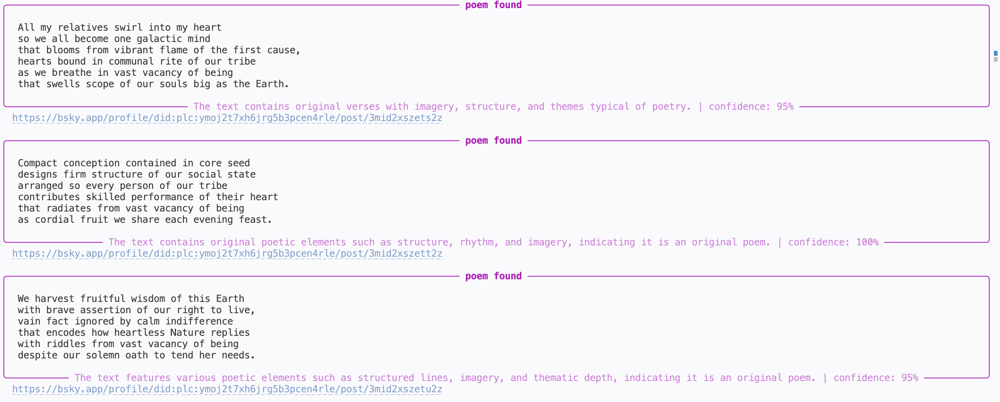
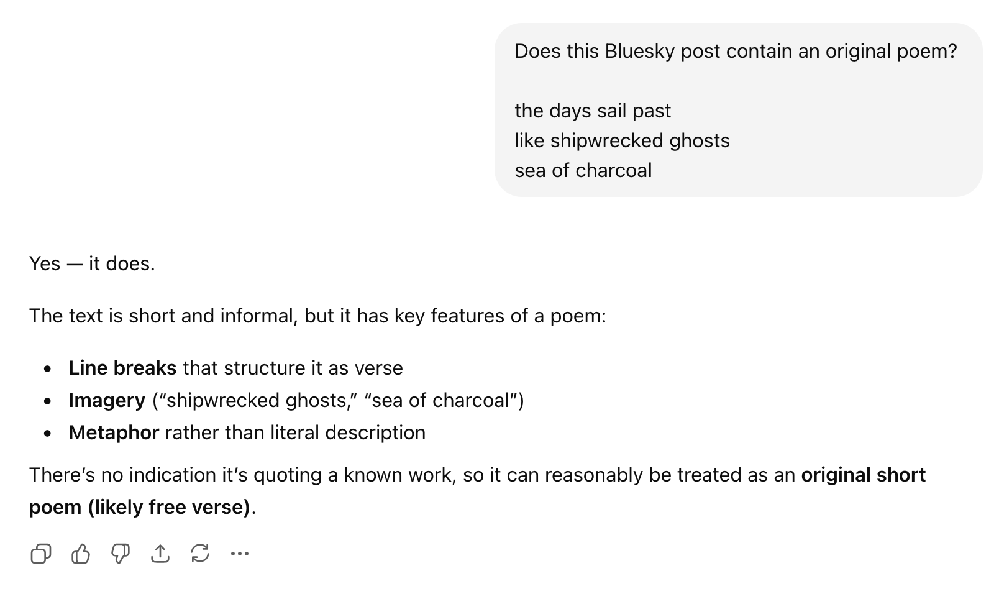
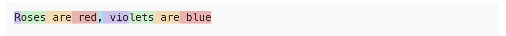
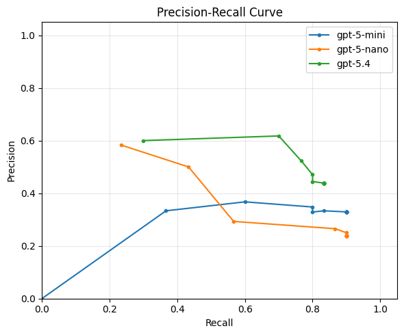
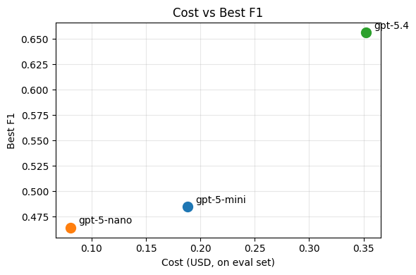
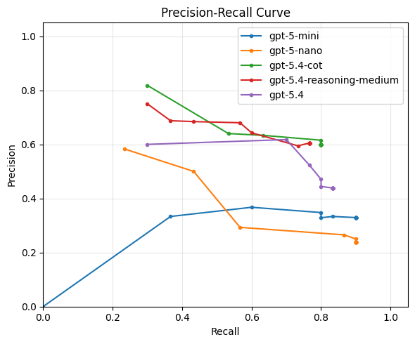
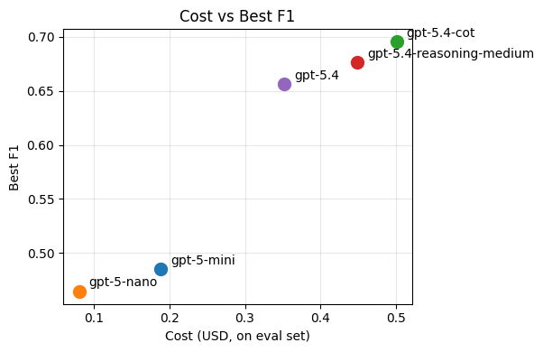

Unit 1: Semantic Text Processing
Q: Think of examples of existing software that processes text. What operations does it perform on strings of text to categorize them or extract information?
Programs have always been good at processing text syntactically: filtering by keyword, matching a regex, parsing a fixed format.
But what if you need to understand what the text means?
- Is this support ticket urgent?
- Does this contract clause contain a liability risk?
- Does this social media post contain an account of police misconduct?
These tasks require semantic understanding — and until recently, the only way to do them at scale was to hire humans.
LLMs change this: they let you write programs that process text based on meaning.
Data Sources LLM Processing Downstream
┌──────────────┐ ┌──────────────┐ ┌──────────────┐
│ social media │──┐ │ │ ┌──▶│ dashboards │
│ documents │──┼──▶│ classify / │───────────────────┼──▶│ alerts │
│ support logs │──┘ │ extract / │ structured output └──▶│ ... │
│ ... │ │ summarize │ (labels, scores) └──────────────┘
└──────────────┘ └──────────────┘
This pattern is showing up everywhere: cloud data warehouses like BigQuery and Snowflake now let you call LLMs directly from SQL queries on text columns. It's becoming a standard part of the data engineering toolkit.
Motivating Example: BlueSky Poetry
What if we wanted to monitor all poems being posted on BlueSky in real time?

Data Source LLM Processing Downstream
┌──────────────┐ ┌──────────────┐ ┌──────────────┐
│ │──┐ │ │ ┌──▶│ │
│ BlueSky │──┼──▶│ classify │───────────────────┼──▶│ CLI │
│ firehose API │──┘ │ (poetry / │ label └──▶│ │
│ │ │ not poetry) │ (boolean) └──────────────┘
└──────────────┘ └──────────────┘
^ our focus for these two weeks
Q: What makes something a poem? Could you use the string operations from your answer to the previous question to detect poetry programmatically?
Outline
- LLM APIs: calling LLMs programmatically
- Structured Output: getting JSON out of LLMs reliably
- Evaluation: measuring if the LLM is doing well
- Prompt Engineering: the craft of making the LLM do better
- Multi-Stage Pipelines: scaling up semantic processing
- Implementation: from design to code with coding agents
How do I call an LLM?
All of you have used LLMs through a web interface like ChatGPT or Google search.

But if we want to use LLMs to process text at scale, we need to call them programmatically (from our code).
There are two main options:
- Hosted APIs: a provider (OpenAI, Anthropic, Google, etc.) runs the model; you send HTTP requests and pay per token. Setup: create an account, get an API key, start making calls.
- Self-hosted models: you run an open-source model (e.g. Llama) on your own hardware. More control, but you manage the infrastructure.
In this class we'll use hosted APIs — they're the easiest way to get started and the most common in production. The basic idea of hosted APIs:
HTTP request
("Is this a poem?\n\nRoses are red,\nviolets are blue.")
┌───────────┐ ─────────────────────────────────────▶ ┌──────────────┐
│ your code │ │ LLM provider │
└───────────┘ ◀───────────────────────────────────── └──────────────┘
HTTP response
(LLM: "Yes")
Q: What are the pros and cons of hosted vs self-hosted?
Popular providers include OpenAI, Anthropic, and Google Gemini. You can use any provider in your assignments. UCSD also provides TritonAI which lets you access multiple providers from your UCSD account and gives you some free credits.
Tokens and Cost
LLM APIs charge by tokens — roughly ¾ of a word. You can see how OpenAI tokenizes text using their tokenizer web interface.
"Roses are red, violets are blue" → 9 tokens

Both input and output tokens count, and they're priced differently (output is typically more expensive — generating text is harder than reading it).
Here's what pricing looks like in practice (see full pricing):
| Model | Input | Output |
|---|---|---|
gpt-5-nano | $0.05/M tokens | $0.40/M tokens |
gpt-5-mini | $0.25/M tokens | $2.00/M tokens |
gpt-5.4 | $2.50/M tokens | $15.00/M tokens |
That's a 50x difference in input cost!
Other providers have similar tiers (e.g. Anthropic's Haiku vs Sonnet vs Opus).
Example:
BlueSky firehose produces ~1.4M posts/day. Let's assume each post is ~50 tokens on average, and we want to generate 1 token of output.
| Model | Input cost | Output cost | Total |
|---|---|---|---|
gpt-5-nano | 1.4M × 50 × $0.05/M = $3.5 | 1.4M × $0.40/M = $0.56 | ~$4.06 |
gpt-5.4 | 1.4M × 50 × $2.50/M = $175.0 | 1.4M × $15.00/M = $21.0 | ~$196.0 |
This is why model choice and pipeline design matter — we'll come back to this.
API Basics: Chat Completions
The core abstraction across all providers is the chat completion: you send a list of messages, the model sends back a response.
Here's how it looks in Python using OpenAI's API:
from openai import OpenAI
client = OpenAI() # uses OPENAI_API_KEY env variable
response = client.chat.completions.create(
model="gpt-5-mini",
messages=[
{"role": "system", "content": "You are a poetry classifier."},
{"role": "user", "content": "Is this a poem?\n\nRoses are red,\nviolets are blue."},
],
)
answer = response.choices[0].message.content
print(answer)
Q: What do you think the model will respond? (Let's find out.)
Anatomy of a Chat Completion
Messages have roles:
system: instructions to the model (persona, task description, constraints)user: the input you want the model to processassistant: the model's previous responses (used in multi-turn conversations)
Model: which LLM to use.
Response: the choices array contains the model's output.
For now we'll always get a single choice back.
Unified LLM APIs
We used OpenAI's API above, but what if we want to experiment with different providers? It would be annoying to rewrite our code just for that.
There are libraries/frameworks that provide a unified API layer over multiple providers; the simplest one is LiteLLM. It is very similar to OpenAI's API, but now we can switch e.g. to a model from Anthropic:
from litellm import LiteLLM
# No client initialization needed!
response = litellm.completion( # The only change is this line
# model="gpt-5-mini",
model="claude-haiku-4-5", # switching to an Anthropic model
messages=[
{"role": "system", "content": "You are a poetry classifier."},
{"role": "user", "content": "Is this a poem?\n\nRoses are red,\nviolets are blue."},
],
)
answer = response.choices[0].message.content
print(answer)
Outline
LLM APIs: calling LLMs programmatically[done]- Structured Output: getting JSON out of LLMs reliably
- Evaluation: measuring if the LLM is doing well
- Prompt Engineering: the craft of making the LLM do better
- Multi-Stage Pipelines: scaling up semantic processing
Structured Output
We called the LLM and got a response. Now what? We want to use that response in our code:
answer = response.choices[0].message.content
if answer == "Yes":
print("Found a poem!")
Q: Will this work? What could go wrong?
The problem with free-form text
The model might respond with:
"Yes""Yes, this is a poem.""Yes, this is a poem. It follows a classic rhyming pattern...""Certainly! This is indeed a poem."
All of these mean yes, but answer == "Yes" only matches the first one.
We could try answer.startswith("Yes") or "yes" in answer.lower(),
but this is fragile — we're back to syntactic text processing!
We need to tell the model how to respond, not just what to respond about.
Attempt 1: Ask nicely
The simplest approach: just add instructions to the prompt.
response = litellm.completion(
model="gpt-5-mini",
messages=[
{"role": "system", "content": "You are a poetry classifier. "
"Respond with only 'true' or 'false'."},
{"role": "user", "content": "Is this a poem?\n\nRoses are red,\nviolets are blue."},
],
)
answer = response.choices[0].message.content
print(answer) # "true"
This works... most of the time. But "most of the time" is annoying to deal with in code (you need error handling and retry logic).
We need more structure
A single boolean is the simplest case, but real applications often need richer output. For our poetry monitor, we might want:
- Whether the post is a poem
- A confidence level
- Explanation of the model's reasoning
The industry standard for this is JSON:
{
"is_poem": true,
"confidence": 0.95,
"explanation": "The text follows a classic rhyming pattern with a consistent meter."
}
Q: Have you worked with JSON before? How would you parse this in Python?
JSON is convenient because:
- Every language has a library to parse it (
json.loadsin Python) - It has a well-defined schema (types, required fields, nesting)
- Modern LLMs are trained extensively on JSON and are good at producing it
Asking nicely for JSON
We can update our prompt to request JSON output:
response = litellm.completion(
model="gpt-5-mini",
messages=[
{"role": "system", "content": """You are a poetry classifier.
Respond with a JSON object with the following fields:
{
"is_poem": true/false,
"confidence": 0.0-1.0,
"explanation": "brief reason (<30 words)"
}"""},
{"role": "user", "content": "Is this a poem?\n\nRoses are red,\nviolets are blue."},
],
)
import json
answer = response.choices[0].message.content
result = json.loads(answer)
print(result["is_poem"]) # True
print(result["confidence"]) # 0.95
print(result["explanation"]) # "The text follows a classic rhyming pattern with a consistent meter."
This works well with modern models, but again works most of the time
(e.g. some models like to put backticks around the JSON, which breaks json.loads).
If you add response_format={"type": "json_object"} to your API call,
some providers will do their best to ensure the output is valid JSON,
but there is no guarantee about which fields it will have.
Attempt 2: Constrained decoding
Instead of asking the model to produce JSON and hoping for the best, we can force it. This is called constrained decoding:
- the API restricts the output to match a specified schema
- it also does a system-level prompt injection to tell the model about the schema
response = litellm.completion(
model=...,
messages=..., # NO NEED TO INCLUDE JSON INSTRUCTIONS IN THE PROMPT ANYMORE!
response_format={
"type": "json_schema",
"json_schema": {
"name": "poetry_classification",
"schema": {
"type": "object",
"properties": {
"is_poem": {"type": "boolean"},
"confidence": {"type": "number"},
"explanation": {"type": "string"}
},
"required": ["is_poem", "confidence", "explanation"],
},
},
},
)
answer = response.choices[0].message.content
result = json.loads(answer)
print(result["is_poem"]) # guaranteed to work
Now json.loads will never fail.
Constrained decoding is a deeper topic we may revisit later.
But for now, the practical takeaway is: use response_format
when you need reliable structured output.
OpenAI API also provides syntactic sugar that lets you parse the response directly into a Python object using Pydantic:
from pydantic import BaseModel
class PoemResult(BaseModel):
is_poem: bool
confidence: float
explanation: str
response = await client.beta.chat.completions.parse(
model=...,
messages=...,
response_format=PoemResult,
)
answer = response.choices[0].message.parsed
print(answer.is_poem) # bool
Outline
LLM APIs: calling LLMs programmatically[done]Structured Output: getting JSON out of LLMs reliably[done]- Evaluation: measuring if the LLM is doing well
- Prompt Engineering: the craft of making the LLM do better
- Multi-Stage Pipelines: scaling up semantic processing
- Implementation: from design to code with coding agents
Evaluation
Let's put together what we have so far:
def detect_poem(text):
response = await client.beta.chat.completions.parse(
model="gpt-5-mini",
messages=[
{ "role": "system", "content": "You are a poetry detector. Given the text of a social media post, determine if it is a poem."},
"role": "user", "content": text }
],
response_format=PoemResult,
)
return response.choices[0].message.parsed
# In practice this would be async, but simplified here:
while True:
text = get_post()
result = detect_poem(text)
if result.is_poem:
print("POEM DETECTED!")
print(text)
print(result.explanation)
print("-" * 40)
Q: Are we done? How would you assess if this is any good?
The hard part has shifted
Insight: With modern LLMs, getting code that "works" is easy. You can go from idea to prototype in minutes.
The hard parts of building AI-powered systems are now:
- Measuring how well it works
- Making it work reliably at scale
This is a fundamental shift in software engineering.
What does evaluation look like?
Evaluation looks very different depending on the task:
- Classification (is this a poem? is this urgent?): compare against labeled examples
- Extraction (pull dates from a contract): compare extracted fields against known answers
- Generation (summarize this article, write a reply): harder — may need human judgment or LLM-based evaluation
Our poetry classifier is a classification task, so we can measure it by comparing its predictions against correct labels.
Evaluation datasets
We need a set of examples where we know the right answer:
| Post | Expected |
|---|---|
| "Roses are red / violets are blue" | poem |
| "Just had the best coffee of my life" | trash |
| "the fog comes / on little cat feet" | poem |
| "My cat is sitting on my keyboard again" | trash |
Q: Where would you get data like this for poetry detection? What are pros and cons of different approaches?
Options:
- Hand-label a sample from the firehose (most reliable, slow)
- Find existing datasets (poetry corpora exist, but may not match BlueSky style)
- Use a more capable model as oracle (fast, but introduces its own biases)
The important thing is that the dataset is representative of what your system will actually encounter.
Q: Can you combine these approaches?
Q: How many labeled examples do we need? 10? 100? 1000?
Too few and your metrics are noisy — one misclassification can swing precision by 10%. Too many and you've spent a week labeling BlueSky posts. In practice, 50–200 well-chosen examples is often a good starting point for a classification task. You can always add more later as you discover failure modes.
Metrics: precision and recall
Given an evaluation dataset, we can run our classifier and compare predicted and expected labels:
| Post | Expected | Predicted | Result |
|---|---|---|---|
| "Roses are red / violets are blue" | poem | poem | TP |
| "Just had the best coffee of my life" | trash | trash | TN |
| "the fog comes / on little cat feet" | poem | trash | FN |
| "My cat is sitting on my keyboard again" | trash | poem | FP |
- True positives (TP): poems our user will see
- True negatives (TN): trash no one will see
- False positives (FP): trash that slips through and annoys users
- False negatives (FN): poems our user will miss
From these:
- Precision = TP / (TP + FP) — "Of the posts the user sees, how many are actually poems?"
- Recall = TP / (TP + FN) — "Of all the poems out there, how many does the user see?"
In terms of user experience:
- Low precision → your feed is full of trash
- Low recall → you miss real poems
Q: Which matters more for our poetry monitor — precision or recall?
There's no universal right answer — it depends on what you're building and who it's for.
Running eval in code
We can now run our detector on the evaluation dataset and compute precision and recall:
import json
# Load evaluation dataset
with open("eval_data.json") as f:
eval_data = json.load(f)
# eval_data = [{"post": "Roses are red...", "expected": true}, ...]
tp = fp = fn = 0
for example in eval_data:
predicted = detect_poem(example["post"]).is_poem
expected = example["expected"]
... // accumulate TP, FP, FN counts ...
precision, recall = compute_metrics(tp, fp, fn)
print(f"Precision: {precision:.2f}")
print(f"Recall: {recall:.2f}")
Q: What would you want your eval infrastructure to have?
Building eval infrastructure
Things you probably want to do:
- We want to try different models, confidence thresholds, and prompts - need to separate classification from analysis
- Each API call costs money — need to cache classification results so you can iterate on analysis without re-calling the API (can also use batch APIs!)
- We want to compare experiments — printing numbers to the console doesn't scale, we probably want a notebook with plots and tables
Visualizing the precision/recall tradeoff

Q: Looking at this plot, which model/prompt configuration would you pick? Why?
Precision and recall capture different aspects of quality, but sometimes we want a single number to compare configurations. The F1 score is the harmonic mean of precision and recall:
F1 = 2 · precision · recall / (precision + recall)
It ranges from 0 (worst) to 1 (best) and is high only when both precision and recall are high, which often makes it a useful summary metric for choosing among configurations.

There's often no single "best" configuration — you're trading off precision, recall, and cost. The right choice depends on your application and your users.
Outline
LLM APIs: calling LLMs programmatically[done]Structured Output: getting JSON out of LLMs reliably[done]Evaluation: measuring if the LLM is doing well[done]- Prompt Engineering: the craft of making the LLM do better
- Multi-Stage Pipelines: scaling up semantic processing
- Implementation: from design to code with coding agents
Now that we know how well we're doing, we can start thinking about how to do better (in terms of both quality and cost).
Q: What can we tweak in our call to the LLM to improve the quality of our poetry detector?
Some options:
- Change the prompt
- Add more precise instructions
- If you have a complex condition (e.g. "either rhymes or is a haiku"), ask about each separately and then combine the results in code
- Add a persona to the system prompt (e.g. "You are a literary critic with a deep knowledge of poetry.")
- Add few-shot examples of poems and non-poems
- Use prompting techniques like chain-of-thought to encourage the model to think before answering
- Use a more capable model (e.g.
gpt-5.4instead ofgpt-5-mini) - Change model parameters
- Older models had "temperature" to control randomness
- Newer models have "reasoning effort" to control how hard the model thinks before answering
All of this tweaking is part of the black art of prompt engineering. Historically, this term only referred to tweaking the prompt, but now it increasingly encompasses model parameters too.
We are not going to spend much time on this, because it's a black art and not science.
- If you want to learn about advanced prompting techniques, check out the Prompting Guide
- There are also tools like DSPy that automatically optimize your prompt (e.g. by adding few-shot examples to maximize performance on your eval set)
Just out of curiosity, let's see if can improve on our best performing baseline, gpt-5.4, by:
- Adding medium reasoning effort
- Adding manual chain-of-thought by asking the model to explain its reasoning before giving the answer (instead of after)


Outline
LLM APIs: calling LLMs programmatically[done]Structured Output: getting JSON out of LLMs reliably[done]Evaluation: measuring if the LLM is doing well[done]Prompt Engineering: the craft of making the LLM do better[done]- Multi-Stage Pipelines: scaling up semantic processing
- Implementation: from design to code with coding agents
Does our poetry detector scale?
┌──────────────┐ ┌──────────────┐
│ │──┐ 1.4M │ │
│ Bluesky │──┼─────────▶│ LLM │──▶ ...
│ firehose API │──┘ posts / │ (poetry / │
│ │ day │ not poetry) │
└──────────────┘ └──────────────┘
If we ran our current best-performing implementation in production,
we'd be calling gpt-5.4 1.4 million times per day.
This is:
- expensive
- slow
- and likely unnecessary (most BlueSky posts are obviously not poems)
Multi-stage pipelines
Idea: use cheap pre-filters to filter out obvious trash!
Q: What criteria would you use to filter out obvious non-poems?
Some ideas:
- Filter by metadata (e.g. language, if we only want English poems)
- Shape-based filter (min 3 lines? limit average line length? no bullet points? etc.)
- Keyword-based filter (could be used as a negative filter for poetry)
- Not for poetry, but for other tasks: filter by similarity to known-good examples using a cheap embedding model
- Use a cheaper LLM (e.g.
gpt-5-nanoorgpt-5-mini) with a high-recall setting - Use a simpler prompt with a high-recall setting
Pipeline design
A reasonable pipeline for the poetry detector might look like this:
1.4M posts/day
│
▼
┌───────────────────┐
│ Metadata filter │ > 20 chars, language = en $0
│ │
└─────────┬─────────┘
~60% │ 840K posts/day
▼
┌───────────────────┐
│ Shape filter │ ≥ 3 lines, avg line < 60 chars $0
│ │
└─────────┬─────────┘
~8% │ 67K posts/day
▼
┌───────────────────┐
│ Profanity filter │ keyword-based $0
│ │
└─────────┬─────────┘
~90% │ 60K posts/day
▼
┌───────────────────┐
│ Cheap LLM filter │ gpt-5-mini, threshold 0.8 ~$1
│ │
└─────────┬─────────┘
~10% │ 6K posts/day
▼
┌───────────────────┐
│ Smart LLM filter │ gpt-5.4 ~$1
│ (poetry / not) │
└─────────┬─────────┘
│
▼
poems!
By adding cheap pre-filters and a two-tier LLM strategy, we reduced the expensive LLM calls from 1.4M to ~6K per day — and the total pipeline costs roughly ~$2/day instead of ~$196/day.
Outline
LLM APIs: calling LLMs programmatically[done]Structured Output: getting JSON out of LLMs reliably[done]Evaluation: measuring if the LLM is doing well[done]Prompt Engineering: the craft of making the LLM do better[done]Multi-Stage Pipelines: scaling up semantic processing[done]- Implementation: from design to code with coding agents
Vibe Coding vs Co-Design
We know what we want to build; now what? You'll probably build it with a coding agent — and a system this size is small enough to build in a single session.
Should you just vibe code it?
Vibe coding: describe what you want in natural language, let the AI generate code, and accept the result without fully reading or understanding it.
Recent studies paint a clear picture:
- Vibe coding is fast but flawed: practitioners are drawn to the speed, but 68% perceive the resulting code as fragile or error-prone, and 36% skip quality assurance entirely (Fawzy et al., 2025).
- Professional developers don't vibe — they control. In a study of 99 experienced developers, not a single one said agents could replace human decision-making. Instead, they plan before coding, review every change, and leverage their SE expertise to supervise the agent (Huang et al., 2025).
In this class we teach you to co-design software with coding agents: you bring the design thinking — abstraction, modularity, and engineering judgment — and the agent brings the speed.
Starting point
Here's our simple script that listens to the BlueSky firehose and classifies every post:
async def listen_to_websocket() -> None:
async with websockets.connect(uri) as websocket:
while True:
text = await get_post(websocket)
result = await classify_post(text)
if result.is_poem:
print(text)
Now we want to turn this into a real system that implements our multi-stage pipeline design. You hand this to a coding agent and say "add the pipeline stages we discussed." Here is some code it might produce.
Snippet 1: The pipeline
async def process_post(text: str) -> Classification | None:
# Stage 1: metadata filter
if len(text) < 20 or detect_language(text) != "en":
return None
# Stage 2: shape filter
lines = text.strip().split("\n")
if len(lines) < 3 or avg_line_length(lines) > 60:
return None
# Stage 3: profanity filter
if contains_profanity(text):
return None
# Stage 4: cheap LLM
cheap_result = await classify_with_llm(text, model="gpt-5-mini")
if cheap_result.confidence < 0.8:
return None
# Stage 5: smart LLM
return await classify_with_llm(text, model="gpt-5.4")
Q: What's wrong with this?
Problem: no abstraction over pipeline stages
I see ghosts of unnamed abstractions!!!
Every stage is a different function with a different signature, and the pipeline logic (the sequence of filters) is tangled with the filtering logic.
What if we want to:
- Reorder stages? We have to move code blocks around.
- Add/remove a stage? We edit the middle of a function.
- Reuse a stage in a different pipeline? We copy-paste.
- Test a single stage in isolation? Awkward.
Better design: make "pipeline stage" an explicit abstraction.
class Stage:
"""A single stage in the classification pipeline."""
name: str
def matches(self, text: str) -> bool:
"""Returns True if the post should pass through to the next stage."""
...
class MetadataFilter(Stage):
name = "metadata"
def matches(self, text: str) -> bool:
return len(text) >= 20 and detect_language(text) == "en"
class ShapeFilter(Stage):
...
class LLMFilter(Stage):
def __init__(self, model: str, threshold: float):
self.model = model
self.threshold = threshold
async def matches(self, text: str) -> bool:
result = await classify_with_llm(text, self.model)
return result.confidence >= self.threshold
Now the pipeline is just a list:
pipeline: list[Stage] = [
MetadataFilter(),
ShapeFilter(),
ProfanityFilter(),
LLMFilter(model="gpt-5-mini", threshold=0.8),
LLMFilter(model="gpt-5.4", threshold=0.5),
]
Configurable, testable, extensible — all because we named the abstraction.
Snippet 2: The main loop
async def listen_to_websocket() -> None:
async with websockets.connect(uri) as websocket:
while True:
text = await get_post(websocket)
result = await run_pipeline(text, pipeline)
if result is not None and result.is_poem:
print(text)
Q: What's wrong with this?
Problem: we're processing posts one at a time
The firehose produces ~16 posts/second. Each LLM call takes ~0.5–2 seconds.
We're await-ing each post before reading the next one —
which means we fall further behind with every second.
Better design: decouple reading from processing with a producer-consumer pattern.
queue: asyncio.Queue[str] = asyncio.Queue(maxsize=1000)
async def producer(queue: asyncio.Queue[str]) -> None:
"""Reads posts from the firehose and enqueues them."""
async with websockets.connect(uri) as websocket:
while True:
text = await get_post(websocket)
await queue.put(text)
async def consumer(queue: asyncio.Queue[str], pipeline: list[Stage]) -> None:
"""Takes posts from the queue and runs them through the pipeline."""
while True:
text = await queue.get()
result = await run_pipeline(text, pipeline)
if result is not None and result.is_poem:
print(text)
async def main() -> None:
queue = asyncio.Queue(maxsize=1000)
async with asyncio.TaskGroup() as tg:
tg.create_task(producer(queue))
# Multiple consumers to parallelize LLM calls
for _ in range(10):
tg.create_task(consumer(queue, pipeline))
Now we have one producer filling the queue, and 10 consumers draining it in parallel — each one independently making LLM calls without blocking the others.